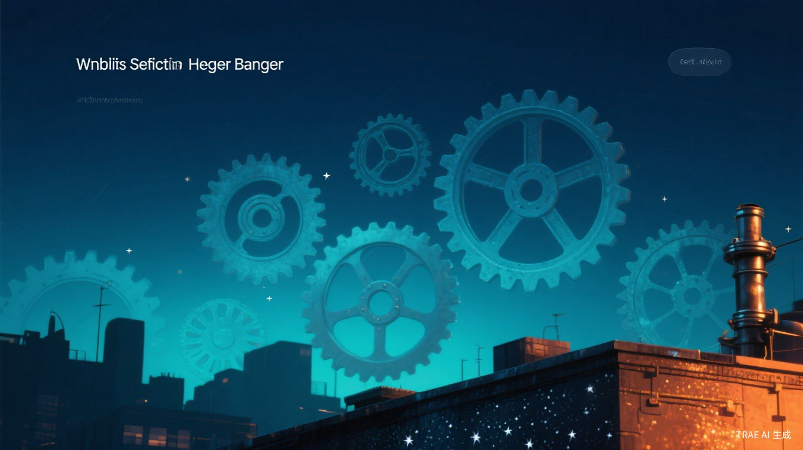
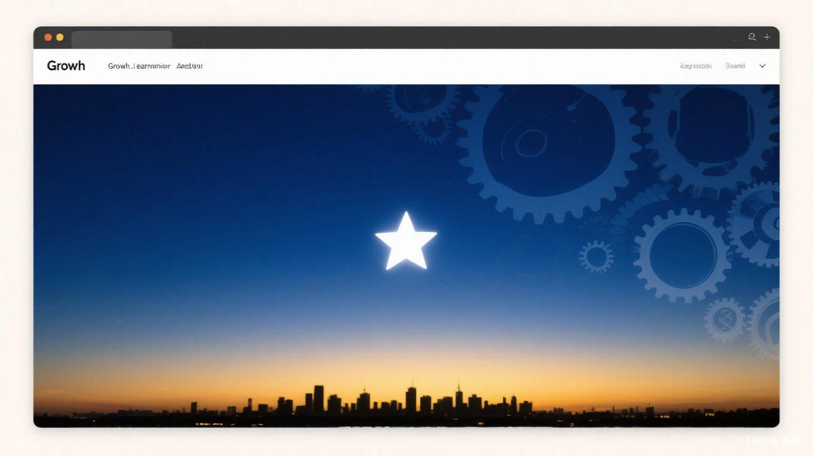

这个月像安迪在肖申克监狱的屋顶上，为狱友争取到啤酒的时刻——在重复的制度化生活中，用一点点创作和学习，为自己争取到了片刻的自由。不同的是，这个月我还做了一个决定。
五月的感觉是齿轮与星光。白天是客服值班、投诉处理、400热线——重复的齿轮不停转动。夜晚是AI学习、技能开发、内容创作——屏幕上的星光一点点亮起来。
上旬是疲惫的积累，中旬是内心的挣扎，下旬是决心渐渐清晰。这个月最重要的不是发生了什么，而是做了一个决定。
⚙
工作
客服值班与投诉处理
奕派400热线、三品牌工单检核、客户投诉处理。重复但必要，这是忍耐的最后一个月。
创作
技能开发与虾评上传
开发AI技能、上传虾评平台、设计自动化工作流。用创作对冲工作的重复感，为下一步做准备。
学习
AI工具学习与IP训练营
AI学习交流群活跃发言（432条）、IP训练营持续参与、内容创作方法论积累。
关系
独立成长与边界重建
彻底清理过去的关系，重新定义自我边界。独立不是孤独，是有能力选择谁进入自己的世界。
决策
一个决定
五月埋下的种子，六月开花。具体内容，下期再说。
⚙

工作认知
客服工作虽然重复，但每一次投诉处理都是一次问题解决能力的锻炼。忍耐不是软弱，是在积蓄力量。
创作认知
AI不是替代，而是放大器——用AI工具放大自己的创作能力，从手动操作到AI辅助到自动化。
成长认知
在忙碌中保持学习，是对抗重复感最好的方式。学习持续不断，为转折积蓄能量。
决策认知
有些决定不是逃避，是对更好生活的主动选择。离开不是因为不够好，是因为值得更好的。
⚙
🔧
虾评
技能上传与评测平台
🐙
GitHub
代码托管与版本管理
🤖
AI工具链
DeepSeek + Kimi
📊
自动化
定时任务 + 自检流水线
工具链演进：手动操作 → AI辅助 → 自动化
每个月进步一点，复利会给出答案。
⚙
具体目标：完成交接，开始新的探索。
模糊期待：在自由中找到更多创作的灵感，建立更清晰的自我边界。
模糊期待：在自由中找到更多创作的灵感，建立更清晰的自我边界。
六月会是一个转折点。具体发生了什么，会在下期月报中回顾。现在只需要知道：五月种下的种子，已经开始发芽了。
⚙
001
/ 960 期 · 2026年5月
"在重复中种下了离开的种子，
在决定中找到了自己的声音。"
在决定中找到了自己的声音。"